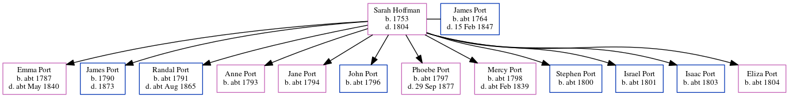

Sarah Port (née Hoffman) 1753 - 1804
[ Home ] | [ Calendar ] | [ Surnames Index ] | [ Errors ] | [ Family History ]Sarah Hoffman, the 4 times great-grandmother of Nigel Horne, was born in Herne, Kent, England in 1753 and married James Port (with whom she had 12 children: Emma, James, Randal, Anne, Jane, John, Phoebe, Mercy, Stephen, Israel, Isaac and Eliza Anne) at St Mary, Reculver, Kent, England on 14 Apr 17871.
She died in 1804 in Kent.
Children
- Emma was born c. 1787
- James was born in 1790
- Randal was born c. 1791
- Anne was born c. 1793
- Jane was born c. 1794
- John was born c. 1796
- Phoebe was born c. 1797
- Mercy was born c. 1798
- Stephen was born c. 1800
- Israel was born c. 1801
- Isaac was born c. 1803
- Eliza Anne was born c. 1804
Citations
- Public Member Trees Online publication - Provo, UT, USA: The Generations Network, Inc., 2006.Original data - Family trees submitted by Ancestry members.Original data: Family trees submitted by Ancestry members.
Family Tree
Map
Generated by ged2site. Last updated on Jul 3, 2024
Known Issues
Birth date (1753) has no citations
Death date (1804) has no citations